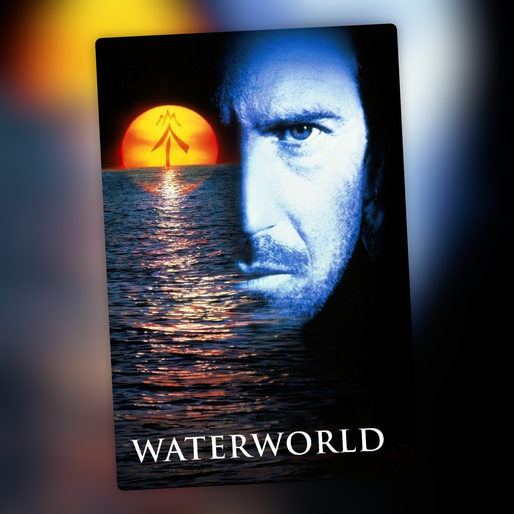

Waterworld: The Ulysses Cut (1995)
Mad Max sobre el agua, ahora con 45 minutos más

Recordaba Waterworld como una película regular y, después de volver a verla en este corte Ulysses, sigo pensando más o menos lo mismo. Para mí es una especie de Mad Max acuático, con mar en vez de desierto, pero aquí tenemos unos 45 minutos más y no creo que le hagan ningún favor.
Costner está más o menos bien haciendo de mutante cascarrabias. Es un tipo solitario y bastante desagradable y, aunque funciona dentro de la historia, durante buena parte de la película resulta algo plano y antipático. Cuesta un poco implicarse con él.
El mundo es este: los casquetes polares se han derretido, la Tierra está cubierta de agua y lo que queda de la humanidad vive en barcos y atolones flotantes. Hasta la tierra y las plantas son un bien valioso, y de ahí viene el mito de Dryland, el lugar al que todos quieren llegar. El Mariner de Costner se ha adaptado al mar hasta tener branquias. Enfrente están los Smokers, los piratas de Dennis Hopper, que controlan el petróleo y las armas. Y todo gira en torno a Enola, una niña que lleva tatuado en la espalda el mapa para llegar a Dryland.
A Waterworld le acompaña la fama de fracaso y, viéndola ahora, cuesta no acordarse del lío que hubo detrás. La dirige Kevin Reynolds, que ya había trabajado con Costner en Fandango, Robin Hood: Príncipe de los ladrones y Rapa Nui, esta última como productor. Era su cuarta película juntos y acabó mal: se enfrentaron durante el rodaje, que fue en mar abierto, y Reynolds se marchó durante la posproducción, a unos tres meses del estreno. El montaje lo terminó Costner. Universal había aprobado unos 100 millones de dólares y acabó gastándose 175, convirtiéndola en la película más cara hasta entonces. Recaudó 88 millones en Estados Unidos y 264 en todo el mundo y, aunque abrió en el número uno, no bastó para cubrir el gasto. Luego remontó algo en vídeo, pero esa fama no se la quitó nadie.
El guion lo firman Peter Rader y David Twohy. Rader lo escribió en 1986 después de una reunión con la productora de Roger Corman, que le había ofrecido dinero por hacer un clon de Mad Max. Escribió siete borradores antes de que lo sustituyeran. Twohy lo reescribió, y Joss Whedon pasó siete semanas retocándolo sin figurar en los créditos, aunque según él no sirvió de mucho.
El Ulysses Cut añade cerca de 45 minutos y desarrolla algo más el mundo y a algunos personajes. Hay más tiempo en el atolón, más escenas con los Smokers y más momentos entre el Mariner, Helen y Enola. El problema es que Waterworld ya era una película larga y llevarla hasta casi tres horas hace que el ritmo se resienta todavía más.
Dennis Hopper está demasiado excesivo como villano. Su Deacon ya iba pasado de vueltas en la versión de cine, y aquí tenemos todavía más tiempo para verlo gritar, hacer el loco y comerse la pantalla. Tiene momentos divertidos, pero llega un punto en el que resulta demasiado.
El resto de secundarios pasan bastante sin más. Jeanne Tripplehorn y Tina Majorino cumplen como Helen y Enola, pero ninguno de los personajes secundarios consigue dejarme demasiada huella.
Lo que sí sigue funcionando son las escenas de aventura y acción. La película tiene algunas secuencias muy buenas y, cuando se centra en la persecución, los combates o el mundo acuático, resulta bastante entretenida. Ahí es donde más se acerca a esa especie de Mad Max sobre el agua que veo en ella.
Después de ver este corte, sigo pensando más o menos lo mismo que recordaba. Waterworld tiene una premisa curiosa y algunas buenas escenas de aventura, pero esos 45 minutos extra no consiguen que me guste más.
Ficha técnica
- Título original: Waterworld
- Dirección: Kevin Reynolds
- Guion: Peter Rader y David Twohy
- Reparto principal: Kevin Costner, Dennis Hopper, Jeanne Tripplehorn, Tina Majorino, Michael Jeter
- Año: 1995
- Duración: 178 min (corte Ulysses; el montaje de cine dura 135 min)
- Plataforma(s) actual(es) en España: no disponible en streaming (edición Blu-ray de Arrow Video)